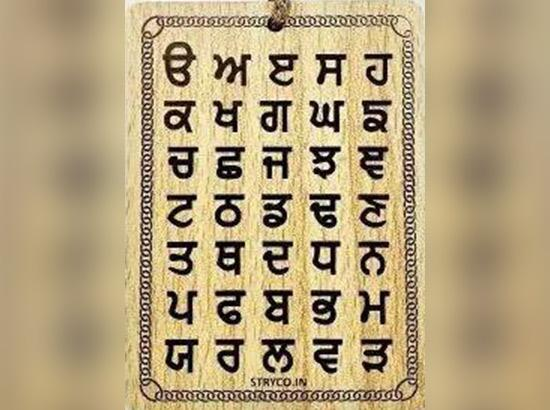

The language of Punjab, primarily Punjabi, holds a central place in the cultural identity of the region and its people. Punjabi is an Indo-Aryan language spoken by millions of people around the world, particularly in the Punjab region of India and Pakistan. It is the most widely spoken language in Pakistan and is one of the most spoken languages in India. Punjabi has a rich literary tradition, with influences from various cultures and religions, reflecting the diverse history and heritage of the region. Historically, Punjabi evolved from the Indo-Aryan languages, with its roots in the languages spoken in the northern Indian subcontinent. The language has a deep connection to the land and people, with its roots embedded in ancient texts and oral traditions. The script used for writing Punjabi differs between India and Pakistan: in India, it is written in the Gurmukhi script, while in Pakistan, the Shahmukhi script, a form of the Persian script, is used. Both scripts have contributed to the preservation of Punjabi literature, poetry, and religious texts. Punjabi is not only a language of everyday communication but also a vehicle for cultural expression. It has a rich tradition of poetry, particularly Sufi poetry, with famous poets like Bulleh Shah and Waris Shah who have shaped the literary landscape. The language is also crucial in the religious practices of Sikhs, as many of their scriptures, including the Guru Granth Sahib, are written in Punjabi. The language, therefore, holds spiritual significance, bringing people together through its hymns and prayers.